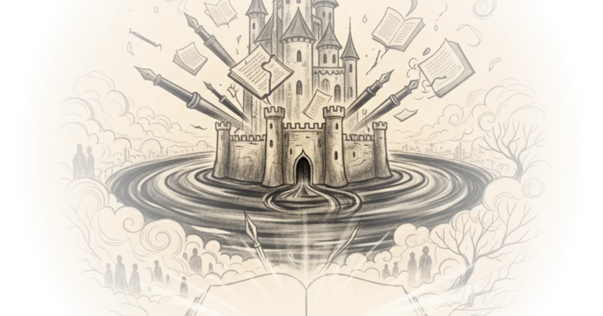

The Cartography of Silence
Jeannine Ouellette has written about childhood sexual abuse, shame, grief, and fear. She has built a career on the premise that silence is complicity, that the truths writers withhold often protect not the vulnerable but the conditions that produce vulnerability. And yet, for twenty-five years, she has kept her marriage to a man named Jon almost entirely off the page. In "Moated Castles," published on her Substack newsletter Writing in the Dark, Ouellette attempts to explain why -- and in doing so, produces one of the more thoughtful recent essays on the ethics of personal writing.
The central metaphor is architectural. Ouellette imagines a writer's life as a landscape dotted with castles, each representing a subject. Some castles sit at busy intersections with open doors. Others perch on cliffs, difficult but not impossible to reach. And some are surrounded by moats with drawbridges that never lower.
Nothing -- including published words -- crosses the water.
It is an effective image, if perhaps too tidy. Real decisions about what to write and what to withhold rarely sort themselves into such clean categories. But Ouellette is not really offering a taxonomy. She is building toward something more personal and more difficult to articulate.

The Audre Lorde Problem
Ouellette anchors her argument in Audre Lorde's 1977 address to the Modern Language Association, one of the canonical texts on why writers must speak. She quotes Lorde's famous imperative directly:
My silences had not protected me. Your silence will not protect you.
Ouellette takes those words seriously. She has, by her own account, tried to answer them honestly throughout her career. But the essay's real project is to argue that Lorde's imperative, while essential, is not absolute. There are silences that serve purposes other than fear or shame.
This is where the essay gets interesting -- and where it risks the most.
Breaking silence -- when the benefits outweigh the harms, when one's own truth can be spoken without weaponizing it unjustly against the vulnerable, when the act of speaking might loosen something trapped in someone who reads it -- is one of the most important things a writer can do. I am committed to that, unreservedly, for as long as I write.
The qualifications packed into that sentence -- benefits outweighing harms, no unjust weaponization, the loosening of something trapped -- do a great deal of work. They transform Lorde's stark binary into a cost-benefit analysis. Whether that transformation honors Lorde's original intent or domesticates it is a question Ouellette does not fully engage with.
Three Moats
The essay identifies three distinct reasons writers leave certain subjects unwritten. The first is ethical: writing would harm others more than it would help anyone. Ouellette describes her early decision not to write about Jon because his children from a previous marriage were navigating their parents' divorce and did not deserve to encounter intimate portraits of their father through the lens of a new partner.
The second reason is more elusive. Some experiences, Ouellette argues, exist only within the relationship that produced them. Translation into language accessible to outside readers would destroy the thing itself.
There is something that exists between Jon and me that exists only between Jon and me. As in, it stops existing outside of our union. It is not translatable.
This is a bold claim for a writer to make. Language is, after all, the tool of her trade. To declare an experience untranslatable is to admit a limit that most memoirists would rather not concede. Ouellette leans on Jane Hirshfield's image of the scar between two bodies, the "black cord" that "makes of them a single fabric that nothing can tear or mend."
The third reason is temporal: some experiences have not yet metabolized into art. The language buckles. The words dissolve. This is not failure, Ouellette insists, but recognition that experience and art operate on different timelines.
The Literary Witnesses
Ouellette is generous with her citations. Mary Oliver kept her decades-long partnership with Molly Malone Cook sheltered from public view. Vivian Gornick acknowledged the unavoidable tension of drawing characters from real life. Joan Didion wrote extensively around her marriage to John Gregory Dunne without ever going deeply inside it -- until his death made the interior writable.
Dunne's death was what made the interior of their relationship writable. Didion wrote the marriage once it was over. That timing is not, I think, accidental.
Maggie Nelson receives the most sustained attention. Ouellette reads The Argonauts as a book that explicitly explores the paradox of writing about love while maintaining zones of privacy. Even Nelson, she notes, maintained a "rejects file" of material deemed too personal.
Nelson tried bravely to hold both gods, and her effort produced one of the most searching books about love I have read. But even Nelson resists total exposure.
The parade of literary forebears is impressive, though it does raise a question Ouellette sidesteps: if so many of the writers she most admires eventually did write about their most intimate relationships -- Oliver after Cook's death, Didion after Dunne's, Nelson in real time -- does that suggest the moat is less permanent than the metaphor implies? The essay presents privacy as a principled stance, but the historical evidence it marshals might equally support the idea that privacy is a temporary condition, a waiting room rather than a final destination.
The Ethics of Withholding
Ouellette is at her sharpest when discussing the ethical weight of memoir. She draws on Judith Barrington's hierarchy: when push comes to shove, people's lives are more important than our words. She acknowledges stories she yearns and burns to tell but cannot, because the telling would bury someone else unnecessarily.
Courage without wisdom is just recklessness.
That line lands. It is the kind of sentence that earns its compression. And it cuts against the prevailing culture of confessional writing, where courage is often measured by how much a writer is willing to expose -- their own life and, inevitably, the lives of those around them.
Ouellette also invokes Jonathan Franzen's observation that without privacy, there is no point in being an individual. Some unreported life, she argues, is what makes a person rather than a persona, a marriage rather than a memoir of a marriage.
A writer who gives everything over to the page, who has no territory left unexplored, no inner room where the words stop -- is a writer who may have lost something more important than material.
This is the essay's most provocative claim, and it deserves more pressure than Ouellette applies. One could argue the opposite with equal conviction: that the writer who holds back the most important material is the one who has lost something, namely the willingness to follow the work wherever it leads. The essay acknowledges this counterargument only implicitly, through its careful structure of justification. Ouellette is clearly aware she is making a case that needs making -- which suggests she knows the opposing case has real force.
Bottom Line
Ouellette has written a thoughtful, well-constructed argument for the legitimacy of writerly silence within a life otherwise committed to disclosure. The essay works because it does not pretend the tension is easily resolved. It holds Lorde's imperative and Hirshfield's "single fabric" in the same frame without forcing them to agree. The literary references are well chosen and do genuine analytical work rather than serving as mere decoration. Where the essay is weakest is in its reluctance to interrogate whether the untranslatability of intimate experience is a permanent condition or a story writers tell themselves while they wait for the right form to arrive. Didion found the form in grief. Nelson found it in autotheory. Ouellette may yet find hers. In the meantime, this essay -- about what she will not write -- is itself a kind of writing about the marriage, a map of the moat if not the castle. That paradox, acknowledged or not, is what gives the piece its quiet power.